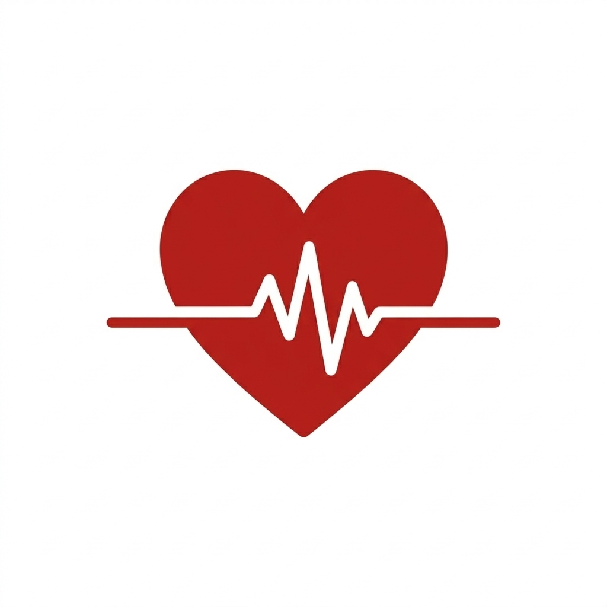

10가지 질문으로 흉통의 원인을 분석해드립니다. 심혈관·위장관·근골격계·심리적 원인 중 어디에 해당하는지 확인해보세요.
지금 즉시 119 연락이 필요한 증상 가슴을 짓누르는 극심한 통증 · 식은땀 · 호흡곤란 · 실신 — 이 증상이 있다면 테스트를 중단하고 즉시 응급 처치를 받으세요.
심뇌혈관센터 17년차 현직 직원이 직접 운영하는 카페에서 같은 증상을 경험한 환우분들과 정보를 나누고 위로받아보세요.